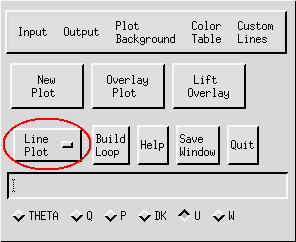
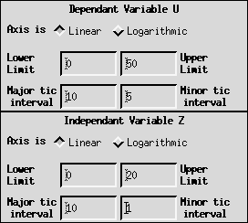
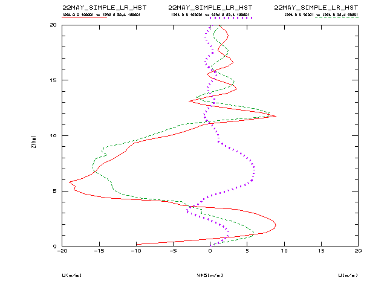

This file discusses the procedures for creating scalar
plots in one dimension.

Procedures:
- It is first necessary to input a data FILE. This activates the Window/Slicer Widget
(depicted below).
- Then, select a FIELD.
- At the Window/Slicer Widget, "fix" or "average" all coordinates
except one. If this variable is a vertical coordinate such
as height, it will become the ordinate in your 1D plot. If the
variable is a horizontal coordinate such as X or Y, it will become
the abscissa in your 1D plot. Adjust the range of the free variable
using the appropriate slider bar (see also WINDOW).
 Window/Slicer Widget
Window/Slicer Widget
NOTE: The number of variables
that you allow to vary determines the number of dimensions
contained in the plot. For example, if two coordinates are "free",
then IVE will create a two-dimensional
plot. If you "fix" or "average" all coordinates, then a Value
Info Window is activated, displaying the value of the field at the
fixed point you have specified.
- Once you have selected the coordinate for the 1D plot, the IVE
Main Window is automatically changed to a one-dimensional mode.
Make sure that "Line Plot" is displayed, unless you wish to plot a
Skew T, Log P diagram of a temperature profile (see Plotting a Temperature Profile on a Skew T, Log P
Diagram).

IVE Main Window in 1D Mode
- An 1D Properties Window (pictured below) will also appear
automatically when you select the coordinate for the 1D plot. The
properties window allows you to specify axis ranges, scales, and
tic intervals. Both linear and logarithmic axis scales are
available in IVE and can be selected by clicking on the appropriate
diamond-shaped button. The range and domain as well as Major and
minor axis tic intervals can be specified by clicking on the
apropriate boxes and inputting the desired values. If "d" or
"default" is entered in any box, IVE automatically determines a
value for your plot.

1D Properties Window
- Finally, when all parameters have been set, click on "New Plot"
in the IVE Main Window to display the plot, or "Overlay Plot" to
overlay an existing plot (see PLOT and OVERLAY PLOT).
Example:
- Pictured below is a sample 1D scalar plot produced by IVE:

back to index
{kind=link}